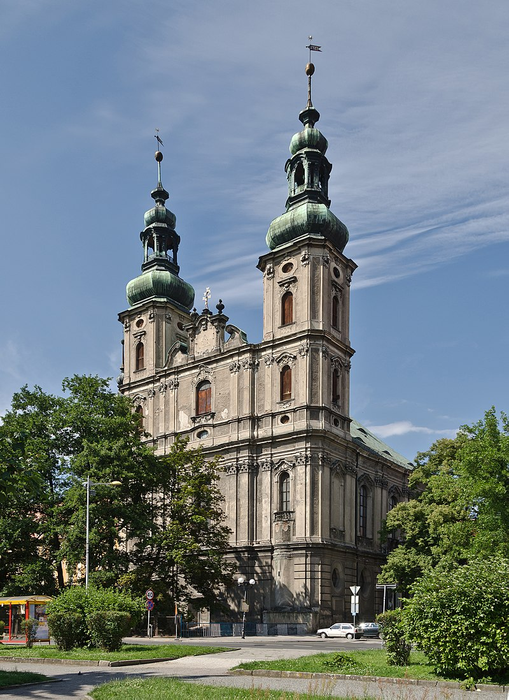
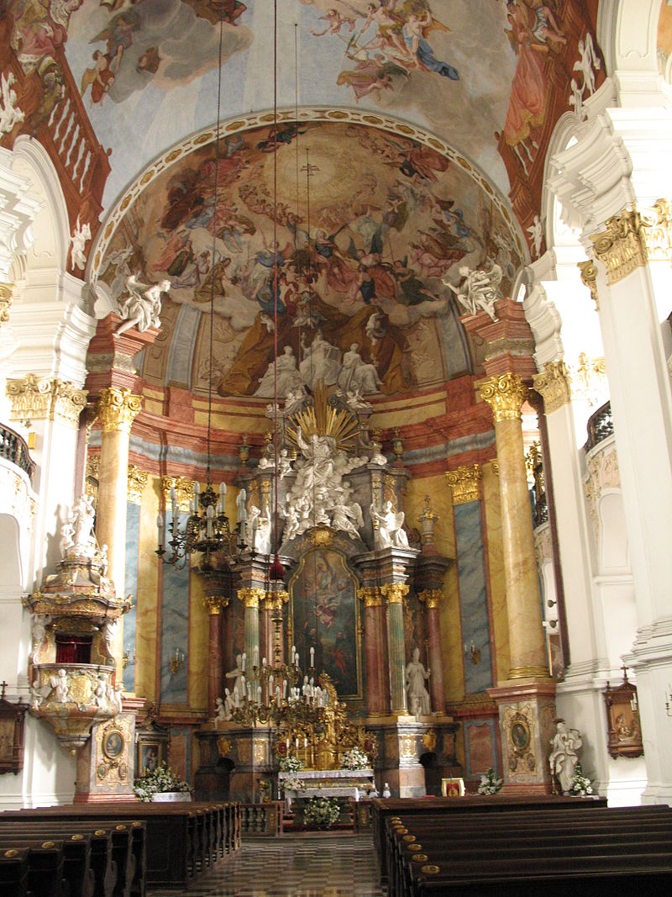

Kościół pw. św. Piotra i Pawła
 Powstanie kościoła ściśle wiąże się z bożogrobcami, którzy zostali sprowadzeni już na przełomie XII i XIII wieku. W roku 1346 zakonnicy ci zbudowali na Starym Mieście, przy kościele Matki Boskiej Różańcowej zespół klasztorno-szpitalny. Po sekularyzacji z 1810 roku kościół na krótki czas stał się fabryką mydła. Obecnie mieści się tu Diecezjalne Gimnazjum i Liceum Humanistyczne oraz Diecezjalny Dom Formacyjny. Kościół odnawiany był w latach 1834-1835 oraz 1929-1930. Szczęśliwie przetrwał pożar Nysy w 1945 roku – zniszczeniu uległy wówczas jedynie szyby i ramy okienne, a ślady po rozpryskujących się wówczas kroplach roztopionego ołowiu są do dziś widoczne na ławkach. W okresie PRL świątynia pełniła funkcję kościoła seminaryjnego, a od 2 sierpnia 1999 roku jest kościołem głównym nowo utworzonej parafii świętych Apostołów Piotra i Pawła, wydzielonej z parafii św. Jakuba. Kościół uznawany za najpiękniejszy przykład nyskiego baroku.